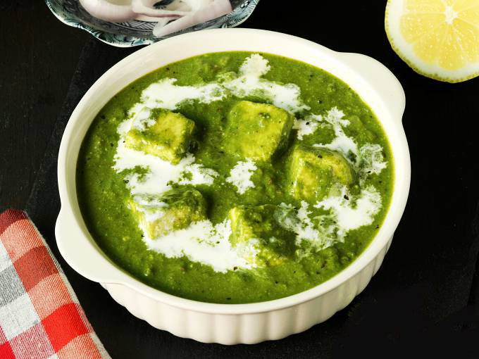

Palak Paneer

Description
Palak paneer is a vegetarian dish in Indian cuisine, consisting of paneer (a type of cottage cheese) in a thick paste made from puréed spinach.
- Prep time : 6-10 minutes
- Cook time : 11-15 minutes
- Serve : 4
- Level of Cooking : Easy
- Taste : Mild
Ingredients
- Fresh spinach leaves, 2 large bunches
- Cottage cheese, 250 grams
- Green chillies, 1-2
- Oil, 1 tablespoon
- Cumin seeds, ½ teaspoons
- Chopped garlic, 1 tablespoon
- Salt to taste
- Lemon juice, a few drops
- Fresh cream 1 tablespoon + for drizzling
Method
- Blanch spinach leaves in sufficient water for 30-40 seconds. Remove from heat and refresh in ice cold water.
- Squeeze out the excess water and grind into a fine puree with green chillies.
- Heat oil in a non-stick pan. Add cumin seeds and sauté till they change color.
- Add garlic, mix and sauté well. Add little water to the prepared spinach puree and mix well.
- Cut cottage cheese into large cubes.
- Add salt, lemon juice and cottage cheese cubes. Mix lightly and cook for 2-3 minutes.
- Add cream and mix well. Switch off heat.
- Drizzle cream on top and serve hot.
Back to Odin Recipes